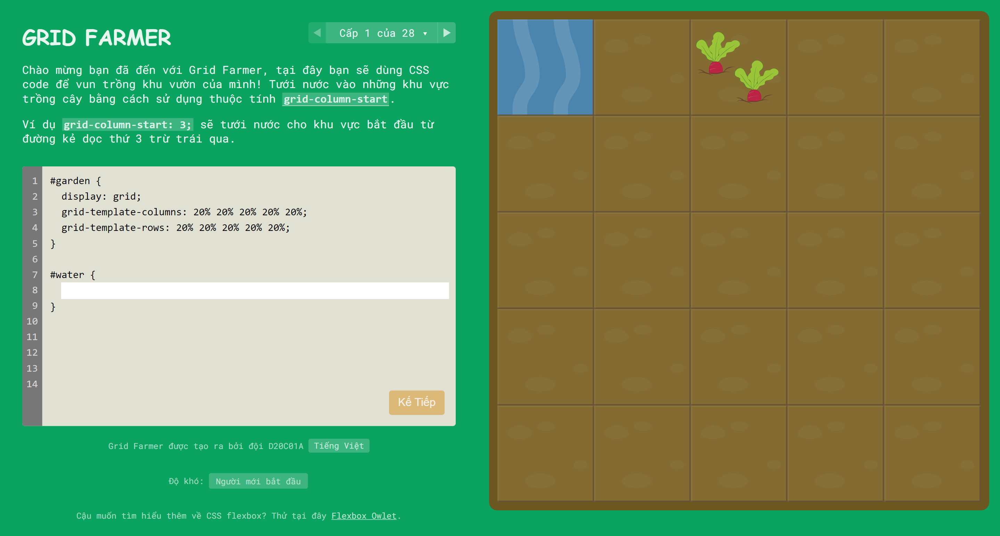
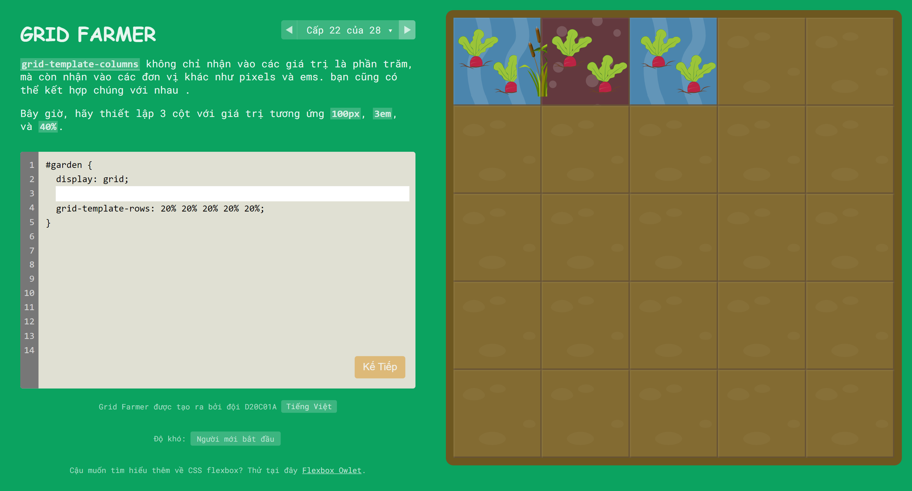
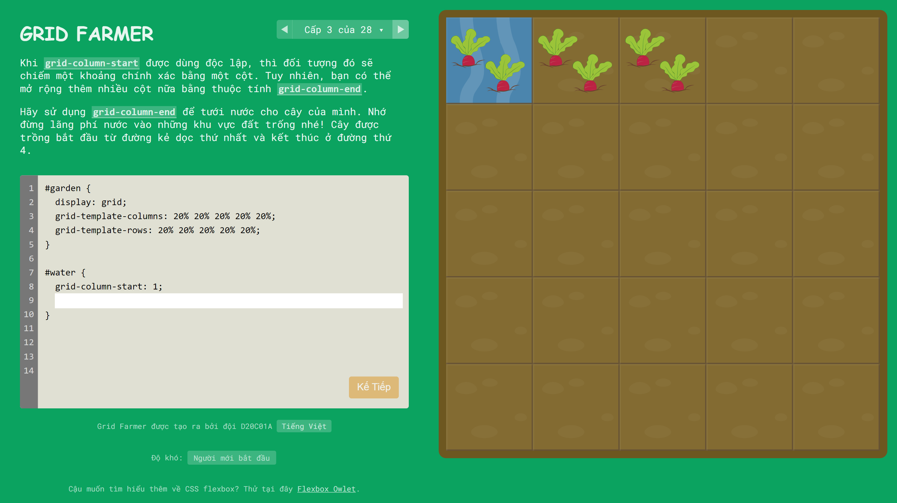
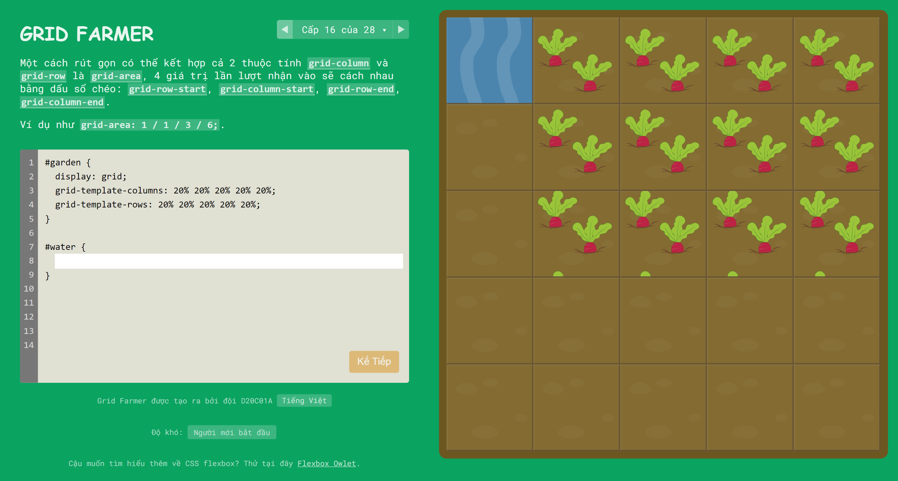
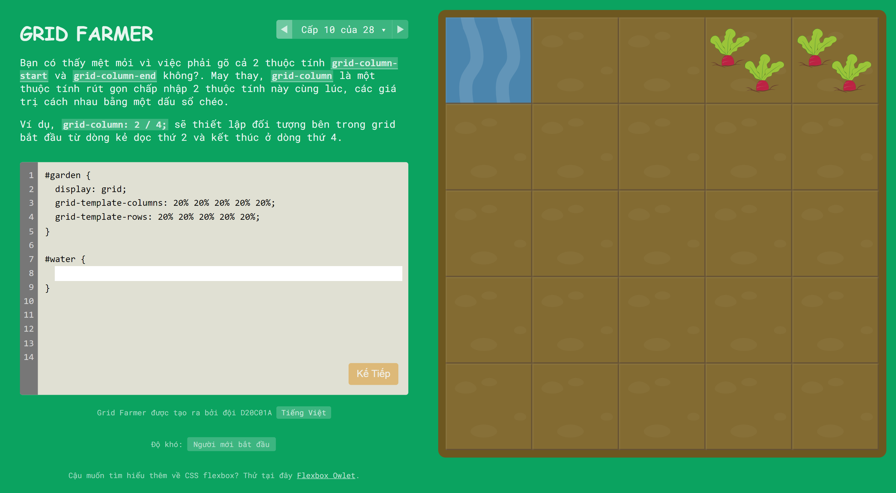
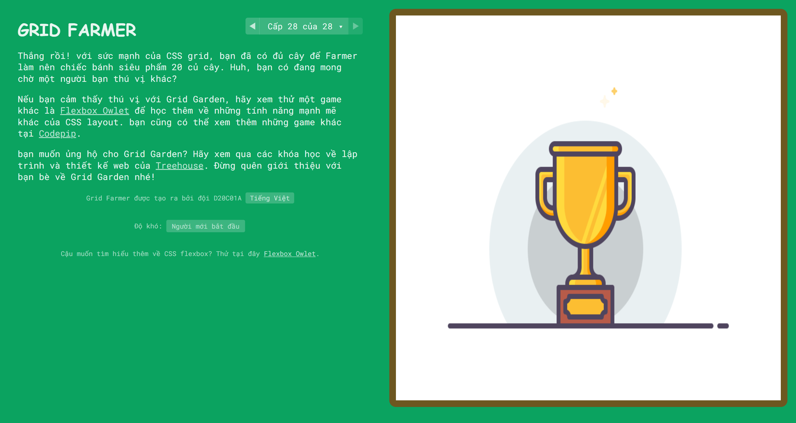

Grid Farmer
Bạn được hóa thân thành một người nông dân chăm chỉ. Hãy chăm sóc những củ dền và diệt sâu hại nhé.!
- CSS Grid!
Chúng tôi làm trò chơi này cho bạn
1. Bạn thường loay hoay và cố gắng tìm ra sự kết hợp các thuộc tính
Grid nào khiến trình duyệt thực hiện những gì bạn muốn.
2. Bạn lo sợ về số lượng thuộc tính mà CSS Grid có và bạn cảm thấy
không thoải mái khi cần tạo bố cục lưới.
3. Bạn muốn tạo các bố cục web phức tạp bằng cách sử dụng Grid nhưng
không phải liên tục nhìn vào trang web sau mỗi lần nhấn "Cmd/Ctrl+S"
trong trình chỉnh sửa mã.
4. Bạn đã cố gắng học CSS Grid qua các video hướng dẫn và bài viết
nhưng vẫn chưa hiểu hết cách thức hoạt động của một số phần trong đó.
5. Bạn sử dụng Flex Box khi cần có Grid vì bạn không cảm thấy tự tin
khi sử dụng nó.
Đây có phải là bạn? Sau đó, bạn chắc chắn muốn học Grid hoặc cải thiện
các kỹ năng hiện tại của mình. Chúng tôi có tin tốt cho bạn… tin rất
tốt?
Tìm hiểu Grid bằng cách chơi trò chơi
Không còn những video, khóa học và bài viết nhàm chán nữa. Tìm hiểu
Lưới theo một cách mới, thú vị và hiệu quả mang tính cách mạng. Bằng
cách chơi một trò chơi viết mã Grid!
Bao gồm những gì:
+ 28 cấp độ mã hóa sẽ dạy bạn
chi tiết cách sử dụng từng thuộc tính Lưới CSS với tất cả các sắc thái
của nó.
+ 16 bố cục dự án thực tế mà bạn
sẽ học cách tạo bằng cách tự xây dựng chúng.
+ 2 chế độ chơi: Dễ
và Khó dành cho mọi cấp độ hiểu biết về Lưới CSS.
+
Môi trường tương tác và vui chơi
khiến việc học như chơi.

Bạn sẽ học được gì
Bạn sẽ hoàn toàn tìm hiểu CSS Grid đến từng chi tiết một lần và mãi
mãi.
+ Grid-template-columns và
grid-template-row là gì và cách sử
dụng chúng với bố cục trong thế giới thực.
+ Cách sử dụng hiệu quả chức năng
repeat và ngừng lãng phí thời gian
vô giá khi tự lặp lại

+ Cách tạo khoảng cách hoàn hảo trong lưới bằng cách sử dụng
column-gap và
row-gap
+ Tìm hiểu tính chất rút gọn cách dùng
grid-column
+ Đơn vị Magic fr mới là gì, nó
khác % như thế nào và sử dụng ở
đâu?

+ Cách định kích thước và vị trí các mục bằng
grid-row-start/end và
grid-column-start/end để tạo grid
nâng cao
+ Cách định vị các mục một cách hoàn hảo bằng
grid-row và
grid-column
+ Thuộc tính
grid-template-areas và
grid-areas là gì và cách sử dụng
chúng với bố cục hiện đại

+ Sử dụng hàm grid minmax hiệu
quả nhất và cách tạo các track linh hoạt khi sử dụng nó
+ Cách sử dụng min-content và
max-content để tạo responsive
grid
+ Sự khác biệt giữa dòng chảy
column,
dense và
row

+ Tìm hiểu về lưới implicit ẩn
và sự khác biệt của nó với lưới
explicit đã biết
+ Cách dùng
grid-auto-columns để tạo lưới
ẩn
+ Cách thay thế flex box khi không cần thiết bằng
justify-content và
align-content

+ Làm chủ CSS Grid bằng cách
giải quyết các cấp độ tương tác phức tạp